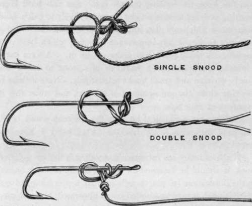
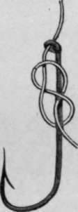
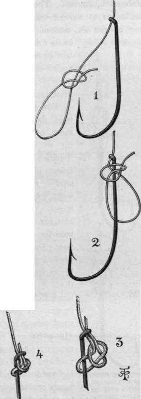
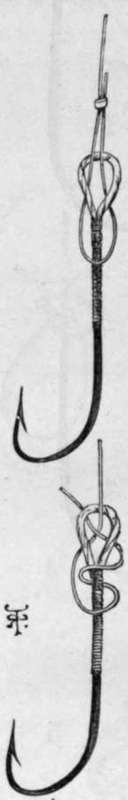
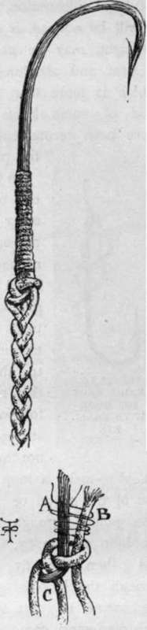
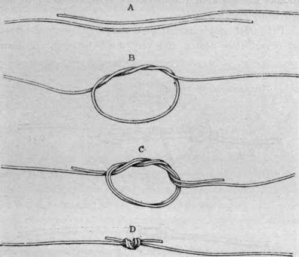

Whippings, Servings, Knots, Hooks, And Sundry Wrinkles. Part 2
Description
This section is from the book "Sea Fishing", by John Bickerdyke. Also available from Amazon: Sea Fishing.
Whippings, Servings, Knots, Hooks, And Sundry Wrinkles. Part 2
Two kinds of hooks are used in sea fishing : those with eyes and those with flat ends ; the second being most favoured by professional fishermen, probably on account of their cheapness. I much prefer eyed hooks. Sea hooks are usually tinned ; but tinning, while only partially preventing rust, blunts the point of the hook. Black japan is better ; but unfortunately, for some reason or other, makers seem as a rule to japan common, badly tempered hooks. In practice I find that the rusting of the ordinary browned freshwater hook is inconsiderable, particularly if the hooks are smeared with vaseline or other grease. Hooks are so cheap that a rusty one can be thrown away without a very serious pang. The Pennell-Limerick hooks (fig. 1) are good for sea fishing, but I rather prefer for the purpose a rounder and wider bend with a twist in it, shown in fig. 2, and usually called a curved limerick. It is a fine hook for holding mussel bait. Sea fish have large mouths, and hooks with a twist are more likely to catch hold than those which are flat, while the loss of penetration is not sufficient to be of any importance with fish which have soft mouths. A sharp point will make up for it. Always carry a watchmaker's file and a fragment of a hone to renew the points of large and small hooks respectively. Note if there is any rust where the gut or snood is tied on, and when this is apparent, at once retie.
Another most excellent hook is the common round bend. The one shown in fig. 3 has the flatted head I have referred to.
If the ordinary sea fishermen's snooding is tied on a flatted hook, it should be fastened on by one of the methods shown in the illustration (p. 72), though it is far neater whipped on. If gut is used, it may be knotted on as illustrated, but whipping is neater, and as lasting if effectively done. In the latter case, the end of the gut should be first placed between the teeth and lightly bitten, so as to roughen it a little—this to prevent it slipping. Both the shank of the hook and the end of the gut should be waxed before being laid together, and any grease on the hook shank carefully removed. There is nothing more annoying than to lose a good fish by the hook slipping away from the gut.
For tying gut on to eyed hooks there are a great variety of knots ; several of them are equally good, and I confess I hardly know which to recommend. One of the simplest and best for sea fishing, shown on the right hand (p. 73), is a slight variation of the Turle knot. It is very secure, very easily tied, and the end sticking up through the eye serves to prevent certain baits from slipping down the shank of the hook. If large fish are expected, especially those with teeth, it is a good plan to let the end be an inch in length, and put a few turns of silk round the two strands of gut immediately above the eye of the hook. This not only lessens the likelihood of a fish cutting the gut, but also strengthens a weak point where there is much wear and tear. If it should happen that the eye of the hook is too small for the gut to pass through it twice, the end need not be passed through, or the knot shown in the left-hand illustration, which, it will be noticed, is a figure of eight, may be used. It is neat and absolutely safe, which is more than can be said of some knots which have been recommended for this purpose.
SINGLE CUT. Methods of attaching snoods to flatted hooks.
Figure Of Eight Knot For Hook With Small Eye.
In the case of bass or other flies tied on ordinary hooks and fitted with gut loops, two plans of attaching them to the gut cast may be followed. The strongest, but not the neatest, is to make a loop at the end of the snood or cast, put it through the loop of the fly, and then the fly through the loop of the snood or cast. This may seem complicated, but is really most simple. The result is shown in the left-hand illustration. The second method is to tie the cast to the loop of the fly, one of the best knots for which— best because it is most easily undone — is also illustrated.
A Safe Knot For Hook With Large Eye.
TWO METHODS OF ATTACHING GUT CASTS TO FLIES PITTED WITH GUT LOOPS.
PLAITED CONGER SNOOD A, shank of hook ; B, third strand ; c, eye of hook.
For conger I tried the experiment of making up snooding as illustrated, and found it to answer extremely well. Gimp is largely used by amateur fishermen for this purpose ; but on the whole I prefer soft hemp, and believe that it is more successful with conger. A good-sized conger hook with a big eye is required, and a yard and a half of eight-plait tanned hemp or flax line is arranged on the eye and shank of the hook in the manner illustrated. The end (b) is next whipped to the hook shank (a), and the three lengths of line which now start from the eye are loosely plaited together. This snood, which closely resembles one of those used for tarpon, should be about two to three feet in length. It will be noted that only one of the three lengths of line passes through the eye in the illustration. If the eye is large enough, two and, if possible, all three lengths should pass through the eye. So much for hooks, whippings and servings.
Ordinary Gut Knots.
Continue to:
- prev: Chapter III. Whippings, Servings, Knots, Hooks, And Sundry Wrinkles
- Table of Contents
- next: Whippings, Servings, Knots, Hooks, And Sundry Wrinkles. Part 3
Tags
fishing, hooks, bait, fishermen, spanish mackerel, mackerel fishing